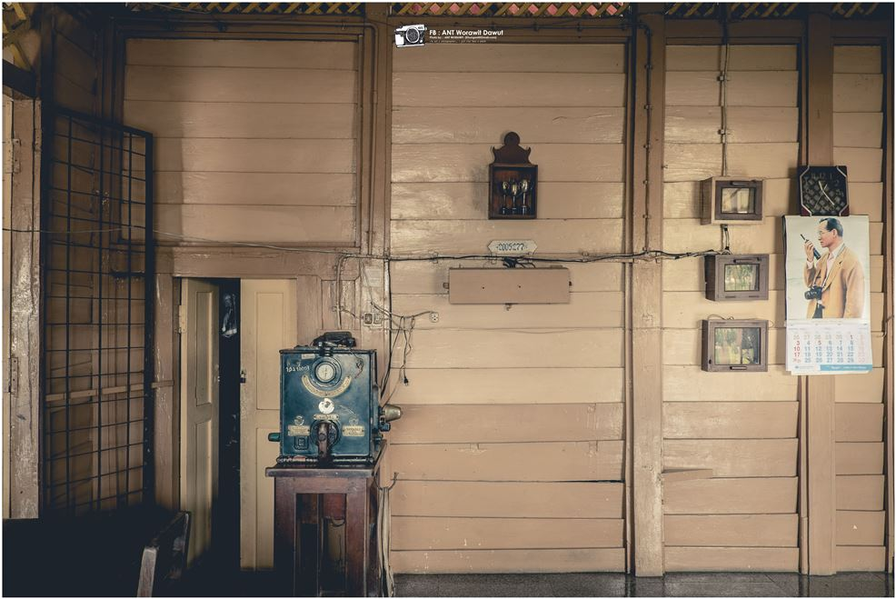
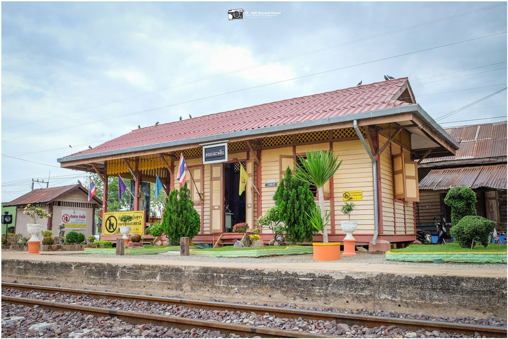
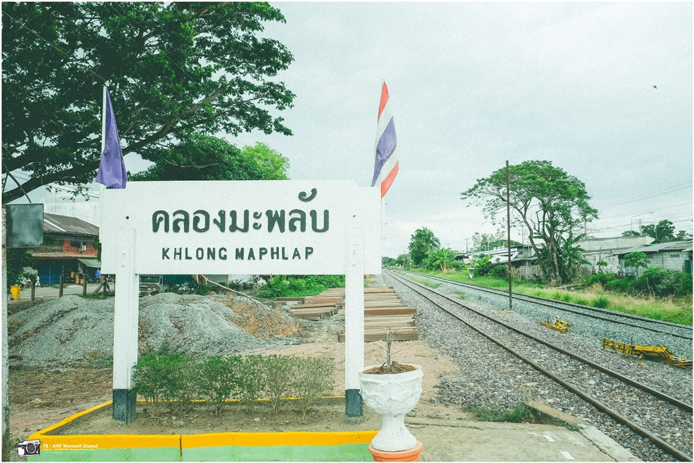

สถานีรถไฟคลองมะพรับ

สถานีรถไฟคลองมะพรับ
ในสมัยราชกาลที่ 5 พระบาทสมเด็จพระจุลจอมเกล้าเจ้าอยู่หัวได้สร้างทางรถไฟสายสวรรคโลก ถึง ชุมทางบ้านดารา จ.อุตรดิตถ์ เมื่อ พ.ศ.2443 ผ่านมาในหมู่บ้านคลองพับ แล้วคลองอุดตัน ตรงใกล้หน้าวัดราษฎร์ศรัทธาธรรมปัจจุบัน และตั้งสถานีรถไฟขึ้นหนึ่งแห่ง ให้ชื่อว่า "สถานีคลองมะพลับ" ซึ่งหมายถึงต้นไม้ชนิดหนึ่ง ดังนั้นคำว่า "คลองมะพลับ" น่าจะมีความหมายมาจากลำคลองที่วกไปวนมา หรือเรียกตามภาษาชาวบ้านว่า "คลองพับไป พับมา" ตามหลักฐานที่ยังมีอยู่ คือ ลำคลองที่อยู่ในตำบลนี้ จึงเชื่อว่าเดิมนั้นเป็น "คลองพับ" มาเปลี่ยนภายหลังการสร้างทางรถไฟเป็น "คลองปรับ" และคลองมะพลับ ตามลำดับการเดินทาง
- เดินทางโดยรถยนต์ส่วนตัวตามถนนทางหลวงเข้าสู่ถนนทางหลวงหมายเลข 1180 เข้าสู่อำเภอศรีนคร
- เดินทางโดยรถยนต์โดยสารประจำทาง (รถทัวร์) เข้าสู่อำเภอศรีนคร
- เดินทางโดยรถไฟขบวนด่วนพิเศษ กรุงเทพฯ-สวรรคโลก (ลงที่สถานีคลองมะพลับ)


สถานที่ตั้ง
-
หมู่ที่ 9 ตำบลศรีนคร อำเภอศรีนคร